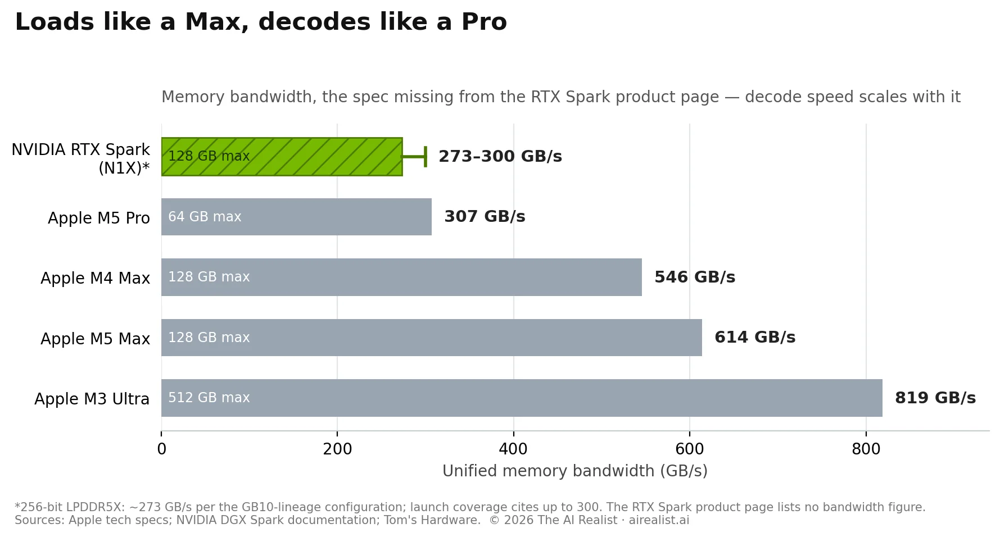
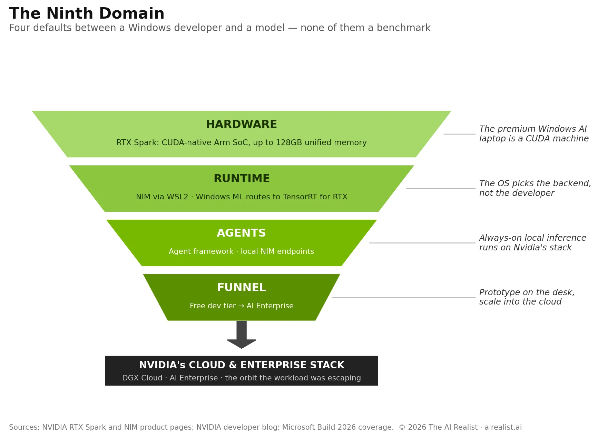

Jensen Huang stood at the Taipei Music Center on the last day of May and announced that Nvidia intended to “reinvent the single most important tool of humanity.”[1] The tool in question is the personal computer, and the product behind the sentence is a laptop chip: RTX Spark, a 20-core Arm processor fused to a Blackwell GPU around a 128-gigabyte pool of memory, co-announced with Microsoft.[2] It ships this fall in machines from Asus, Dell, HP, Lenovo, and MSI, with a Surface Laptop Ultra as the flagship. Shares of AMD, Intel, and Qualcomm fell on the news.[3] The market read the announcement as a land grab in the PC business.
Eight weeks earlier, this publication described the single move that could pull local AI back into Nvidia’s orbit. In “Your Parents Paid,” we documented how Nvidia’s own product segmentation had handed the fastest-growing consumer AI workload to Apple and AMD, and we listed three conditions under which that would reverse. The third: “the CUDA moat extends into inference. If NVIDIA ships inference-specific optimizations — through TensorRT-LLM, NIM, or a CUDA-exclusive quantization format — that make the performance gap too large to ignore, practitioners return to NVIDIA hardware regardless of memory capacity.”[4]
RTX Spark is condition three, shipped as a product line. But it arrived with a twist we didn’t predict:Nvidia isn’t closing the performance gap. It’s making the gap irrelevant.
The spec sheet and the missing number
Start with what Nvidia published. The RTX Spark product page lists up to 6,144 CUDA cores on the Blackwell GPU, up to 20 CPU cores, up to 1 petaflop of FP4 AI performance, and up to 128 gigabytes of unified memory.[2] On stage, Huang claimed the chip runs 120-billion-parameter models locally.[5] That claim deserves a moment of respect. In April, we showed that the 120B model class needed 60-70 gigabytes at usable quantization and therefore did not fit on any consumer Nvidia product. The 32-gigabyte ceiling on the RTX 5090 was the centerpiece of Nvidia’s segmentation, the design choice that pushed private-inference buyers toward a $3,699 Mac Studio.[4] RTX Spark removes that ceiling. The capacity objection is gone.
Now look for the number that isn’t there. The product page lists cores, petaflops, and gigabytes. It does not list memory bandwidth.[6] For local language models, bandwidth is the most important metric: token generation reads the entire working set of model weights from memory for every token, making decode speed a near-linear function of memory throughput. Capacity decides whether a model loads. Bandwidth decides whether you can stand to use it. Nvidia headlined the first number and buried the second, the same disclosure pattern it used for the DGX Spark desktop, whose 273 GB/s figure appeared in technical documentation rather than marketing.[7]
Launch coverage and pre-launch leaks fill the blank and explain the silence. The full-spec N1X silicon inside RTX Spark is, by all accounts, the same configuration as the DGX Spark’s GB10: a 256-bit interface of LPDDR5X (laptop-class memory) delivering roughly 273 GB/s, with launch-day spec coverage citing up to 300.[8] Apple’s M4 Max delivers 546 GB/s. The M5 Max delivers 614. The M3 Ultra delivers 819.[9] On the dimension that determines how fast a local model actually runs, the machine Nvidia just announced trails the machines it was announced to displace by a factor of 2 to 3.

So the puzzle is real. Nvidia came back for local AI without closing the gap that lost it the market in the first place. Why would a company that just reported $215.9 billion in annual revenue enter a fight it has already measured itself losing on the merits?
Because the fight isn’t on the merits. RTX Spark is not a bid for the PC market. It is the recapture of the one AI workload that was escaping Nvidia’s orbit, and the recapture runs on defaults, not on benchmarks. The machinery has four layers, and only one of them is silicon.
Four layers of default
The first layer is the hardware itself, and the most important word on the product page is “natively.” Nvidia’s copy reads: “CUDA, the software that accelerates the world’s AI, runs natively on RTX Spark.”[10] Every prior path to large-model local AI on a thin-and-light Windows machine ran through someone else’s silicon and someone else’s runtime: Qualcomm’s NPU through ONNX, AMD’s iGPU through Vulkan, Apple’s unified memory through Metal. Each of those paths was hardware-agnostic by necessity, which is precisely what made local inference the first workload to slip Nvidia’s gravity. RTX Spark ends the necessity. For the first time, the premium Windows laptop tier ships with the same CUDA stack that runs the datacenter, and 128 gigabytes to feed it.
The escape route and the orbit now share a machine.
The second layer is the runtime, where the recapture stops being a hardware story. On RTX AI PCs, Nvidia’s NIM microservices run as containers in Windows Subsystem for Linux, with CUDA acceleration, and package models with everything needed to run them.[11] The quieter announcement is the one that matters: Microsoft’s Windows ML inference stack now automatically routes to Nvidia’s TensorRT for RTX whenever it detects RTX hardware.[12] Read that sentence again at the level of incentives. A Windows application developer who calls the operating system’s standard AI interface does not have to select an inference backend. The operating system selects it, and on this machine, the selection is CUDA. The developer didn’t choose Nvidia. Windows chose it for them. Jensen’s defense writes itself: developers begged for this. Local CUDA parity with the datacenter was among the loudest requests in Nvidia’s developer ecosystem, and the convenience is not an illusion. But convenience is how every default gets built.
The trap and the gift are one and the same.
That shift, from chosen dependency to ambient dependency, is the difference between the lock-in we described in “Open Source, Closed Orbit” and the lock-in being assembled now.[13] The original Black Hole worked on practitioners: researchers and engineers who chose CUDA because the tools were better, then found the exit priced in switching costs. The new layer works on people who never make a choice at all. The mainstream Windows developer building an AI feature in 2027 will write to Windows ML, ship to machines that route to TensorRT, and acquire a CUDA dependency the way one acquires an accent. Nobody decides to have one.
The third layer is the agent platform, and it explains the timing. RTX Spark’s marketing mentions chatbots only briefly. The page promises a PC where “agents work alongside you — running tasks, generating assets, writing code, on demand,” and pitches the desktop variants as machines “built to run personal AI agents 24/7 right at your desk.”[14] The plumbing has a name: NVIDIA OpenShell, an agent framework coming to Windows on top of Microsoft’s new security primitives, packaging local autonomous agents with guardrails gating what they can touch — alongside NIM containers as local agent endpoints and native NIM support arriving in Azure AI Foundry in July.[15] The agent era re-platforms the PC around continuous local inference, the bandwidth-hungry, always-on workload pattern that decides hardware defaults for a decade. Whoever owns the default runtime when that re-platforming happens owns the next ten years of Windows AI development.
The Windows re-platforming is being co-authored by Nvidia.
The fourth layer is the funnel, and it is the oldest trick in the catalog. NIM’s developer tier is free and genuinely useful: unlimited endpoints for prototyping, hosted on DGX Cloud. Production is a different conversation. Nvidia’s own product page walks the path in two sentences: prototype freely, then “talk to an NVIDIA product specialist about moving from pilot to production with the security, API stability, and support that comes with NVIDIA AI Enterprise.”[16] The same NIM container that runs on the laptop runs in the datacenter and the cloud, which Nvidia presents as portability and which functions as a ratchet. A team prototypes an agent on a Spark laptop, the prototype works, and scaling it means an enterprise agreement that cross-sells the rest of the stack.
It is the catalog-and-contract structure we have documented across eight Nvidia infrastructure domains.[13] The laptop makes it nine, and it sits at the top of the funnel, where developers form habits.
Put the four layers together, and the design is legible. Nvidia fixed the capacity problem, kept the bandwidth problem, and wrapped both in the Windows default. It can concede the benchmark because it is buying the path. A 2x decode deficit against a Mac Studio matters to the practitioner who measures tokens per second.It matters not at all to the Windows developer whose operating system, container catalog, agent framework, and cloud funnel have already agreed on the answer before the question was asked.

There is a precedent for this, and Jensen named it himself two months before the announcement. “GeForce is NVIDIA’s greatest marketing campaign,” he told the GTC crowd in March. “Your parents paid for you to be an NVIDIA customer... until someday you became an amazing computer scientist and became a proper customer.”[17] GeForce recruited the CUDA generation: gamers who became graduate students, who became the engineers who made CUDA the default in the datacenter. The pipeline aged. Gaming now accounts for 7% of Nvidia’s revenue, and the recruits were buying Macs.[18] Spark is that pipeline rebuilt for the agent era. The laptop is the new GeForce, except this time the product being marketed isn’t a graphics card a teenager will outgrow. It’s a default that a developer will never notice.
What the machine actually does
Honesty about the product, because it’s good. RTX Spark’s compute is real: the full configuration matches the 6,144 CUDA cores of a desktop RTX 5070, and on the GB10 silicon it shares with the DGX Spark, prefill — the compute-bound phase where a long prompt is ingested — runs at roughly 2,000 tokens per second on a 20B model.[19] For workloads that are mostly ingestion (summarizing long documents, retrieval over a document base, batch classification), that is a serious machine in a laptop chassis. The 45-to-80-watt envelope, the all-day-battery claim, and the full RTX gaming stack make it the most credible Windows-on-Arm product ever shipped, where Qualcomm’s Snapdragon X struggled to give mainstream buyers a reason to switch.[20] And 128 gigabytes of addressable memory on a Windows laptop is a first. None of this is vaporware.
The decode numbers are equally real, and they cut the other way. On the same GB10 silicon, LMSYS measured the DGX Spark generating just under 50 tokens per second on a 20B model at 4-bit precision — against 215 for an RTX Pro 6000 and 205 for an RTX 5090, a gap of roughly 4x that the reviewers attributed directly to the LPDDR5X memory interface.[19] Decode speed doesn't improve with the laptop’s power envelope because memory bandwidth doesn’t scale with wattage; the laptop will generate tokens at desktop-GB10 speed, which is to say at half to a third the speed of the Apple Silicon machines it shares a price bracket with.[21]
A reasoning model that thinks for ten thousand tokens before answering will make a Spark user wait three to four minutes per answer. The “agents running 24/7 at your desk” pitch quietly depends on the user not watching them work.
A note on a number you will see misquoted. Nvidia’s specifications include a 600 GB/s figure, and parts of the trade press have already printed it as the memory bandwidth.[22] It isn’t. The 600 GB/s is NVLink-C2C, the interconnect between the CPU and GPU complexes on the package. The memory interface feeding both remains LPDDR5X at roughly 273 to 300 GB/s. Bandwidth between two processors and bandwidth to the memory that holds the model are different numbers, and conflating them doubles the product’s apparent throughput. The confusion is not an accident of complicated engineering. Retail listings may yet publish the figure; the DGX Spark precedent, where the number surfaced in technical documentation after launch, suggests the pattern is policy. A company that headlines its interconnect bandwidth and buries its memory bandwidth knows which comparison it would lose.
So the honest scorecard reads: best-in-class prefill for the form factor, true 120B capacity, decode bandwidth in M5 Pro territory at M5 Max prices, and a marketing sheet built to keep you from computing that last number. Our April verdict — no amount of software makes 273 GB/s faster than hardware with three times the bandwidth — survives contact with the new product.What changed is that Nvidia stopped trying to win the comparison and started making sure the buyer never runs it.
The practitioners who walk away
The recapture has a boundary, and the boundary is choice. Everything in the four-layer machinery operates on defaults: the default premium laptop, the default OS inference path, the default agent runtime, the default scaling story. Nothing in it binds the practitioner who actively chooses a stack. llama.cpp still runs everywhere. Vulkan still outruns vendor stacks on AMD silicon.[4] Apple’s MLX is becoming the default backend of Ollama, the most popular local-model tool, with measured decode gains of 93% on supported models.[23] The buyer who reads benchmarks before purchasing will keep buying the machine with 614 GB/s, andnothing Nvidia shipped last week changes that calculus.
But count the populations. The benchmark-reading tier is a niche. The Windows installed base is more than a billion machines, refreshed through OEM defaults and corporate procurement cycles that have shipped “the premium Intel laptop” for thirty years and will ship “the premium RTX Spark laptop” with equal indifference to memory-bus arithmetic.Distribution decides defaults, and defaults decide ecosystems. Qualcomm proved that distribution alone doesn’t move an ecosystem: two years of Snapdragon X laptops put Arm Windows machines in every retail channel without giving developers a reason to target them. Nvidia inherits the compatibility groundwork Qualcomm paid for and arrives with the developer reason pre-installed: a machine carrying the stack the world’s AI is already written on, an OS that routes to it silently, and an agent platform whose launch partner is the OS vendor itself.
The exception that proves the design: the people most likely to escape recapture are the people Nvidia’s original segmentation already pushed out. The medical practice that bought a Mac Studio in 2025 for private 70B inference has no reason to return; its stack is Metal, its tooling is MLX, and its data never left the building. Nvidia has written them off; the project is making sure the next ten million developers never become them.
The ninth domain
Readers of this publication have seen this architecture before. “Open Source, Closed Orbit” mapped how Nvidia replicated the open-source ecosystem’s eight critical infrastructure functions — model hosting, developer tooling, inference serving, fine-tuning, evaluation, and the rest — each replica routing back to Nvidia hardware.[13] The framework’s gap was geographic: the eight domains lived in the cloud, and the datacenter, and the device on the desk remained contested ground. That contest is what “Your Parents Paid” documented from the other side: at the device tier, where workloads run through llama.cpp and MLX rather than NIM and Triton, the pull was visibly loosening. Local inference wasn't escaping because someone built a better CUDA; it was because the workload didn’t need CUDA at all.[4]
RTX Spark closes the map. The device is the ninth domain, and the replication strategy is identical to the first eight: take a function the open ecosystem performs in a hardware-agnostic way, ship a vertically integrated version that is easier than the agnostic one, and let convenience do what compulsion couldn’t. The two pieces are mirror images. April’s story was segmentation pushing the workload out: a 32-gigabyte ceiling, a missing NVLink, a bandwidth-starved Spark desktop, each a deliberate gap that protected datacenter margins. June’s story is integration pulling the workload back: full capacity, native CUDA, OS-level routing, and an agent platform. Opposite moves. Same gravity. In both directions, the constant is that Nvidia designs the consumer product around what it does to the datacenter business, becausethe datacenter is 90% of revenue, and the consumer device is, in Jensen’s own framing, a marketing campaign with a motherboard.[17][18]
What would have to break
The recapture thesis is falsifiable, and we’ll state the conditions plainly.
First, it breaks if the default path opens up. If Windows ML’s hardware routing stays neutral in practice — if a developer writing to the standard Windows AI interface gets equivalent first-class treatment on Qualcomm NPUs and AMD silicon, and the TensorRT route confers no meaningful advantage — then the second layer of the machinery never engages, and RTX Spark is just a fast laptop. The incentive structure argues against this. Microsoft has reasons to keep Windows ML formally vendor-neutral; Nvidia has reasons to make the neutral interface perform best on its hardware; and “formally neutral, practically optimized” is how platform defaults in computing have historically worked. Watch the benchmark deltas between Windows ML on Spark and Windows ML on Snapdragon through 2027. If your AI feature had to run on a non-RTX machine tomorrow, would anything break? If you don’t know, the default has already been decided.
Second, it breaks if the agnostic stack holds the mainstream, not just the practitioners. Ollama’s MLX migration, llama.cpp’s ubiquity, and an M5 Ultra refresh give Apple every chance to keep the enthusiast tier and grow it; the M5 Ultra skipped this week’s WWDC and is now expected around October on reported memory-supply constraints, which puts Nvidia’s fall launch and Apple’s 128GB-class answer in the same quarter.[24] If local AI on Windows stalls — if the agent-PC pitch lands as this decade’s 3D TV — then Nvidia will have built a beautiful funnel over a dry riverbed. The third condition is the prosaic one: adoption. Windows-on-Arm carries a decade of compatibility scar tissue, fall launches slip, Morgan Stanley’s channel checks put N1X machines at $2,899 and up, and premium-priced first-generation platforms have a long history of underselling their keynotes.[25] If OEM sell-through disappoints by the end of 2027, the ninth domain stays open.
Here is why we doubt Nvidia loses even then. In September 2025, Nvidia agreed to buy $ 5 billion of Intel common stock, roughly 4% of the company whose RTX Spark franchise it is ostensibly built to attack; the purchase closed in December after antitrust clearance.[26] The equity is the smaller half of the deal. The same agreement commits Intel to build x86 system-on-chips for the PC market “that integrate NVIDIA RTX GPU chiplets” — Intel’s own filing language.[26] Read the two moves together. If Arm-based AI PCs win, Nvidia owns the chip. If x86 holds, the incumbent’s next-generation PC silicon will carry Nvidia’s GPU by contract. The instruction set is a coin flip Nvidia has hedged; the layer it refuses to share in either branch is the one this piece is about: the GPU, the runtime, and the default path between a Windows developer and a model. That hedge is the clearest evidence of the bet. Companies hedge the parts they consider interchangeable. They never hedge the moat.
In April, we ended by noting that the local inference market was growing despite Nvidia’s product line, not because of it, and that the gravity of the Black Hole was measurably weakening at the device tier. Eight weeks later, Nvidia shipped the correction, which tells you how seriously it took the leak.It did not ship more bandwidth. It shipped a default.
Local inference still doesn’t need CUDA. Nvidia just rebuilt the machine it runs on so that the path of least resistance does.
Notes
[1] Jensen Huang, GTC Taipei keynote at Computex 2026, Taipei Music Center, May 31–June 1, 2026 (June 1 local time). “Reinvent the single most important tool of humanity” quoted byTom’s Hardware.
[2] NVIDIA RTX Spark product page (nvidia.com/en-us/products/rtx-spark, accessed June 10, 2026): up to 6,144-core Blackwell RTX GPU, up to 20-core CPU, up to 1 petaflop FP4, up to 128GB unified memory. Laptop partners: Asus ProArt P16, Dell XPS 16, HP OmniBook X 14, Lenovo Yoga Pro 9n, Microsoft Surface Laptop Ultra, MSI Prestige N16 Flip AI+; desktop partners include Acer and Gigabyte. Announced May 31, 2026 with Microsoft (NVIDIA Newsroom); availability fall 2026. CPU complex: 20 Arm cores (10x Cortex-X925 + 10x Cortex-A725), co-designed with MediaTek, perHotHardware. Nvidia also showed a two-year cadence roadmap with successor chips in 2028 and 2030.
[3] AMD, Intel, and Qualcomm share declines on the announcement:CNBC, June 2, 2026.
[4] “Your Parents Paid,” The AI Realist, April 3, 2026. The three reversal conditions appear in the closing section, “What would have to break.” Companion hardware guide: “What to Buy for Local LLMs (April 2026).”
[5] 120-billion-parameter local model claim: Nvidia keynote and product materials, reported byNotebookcheck. At Q4-class quantization a 120B dense model requires roughly 60–70GB of memory; 120B-class MoE models fit comfortably in 128GB. Vendor claim; independent throughput benchmarks on shipping hardware not yet available.
[6] NVIDIA RTX Spark product page, accessed June 10, 2026. The specifications section lists GPU cores, CPU cores, FP4 throughput, and memory capacity. No memory bandwidth figure appears anywhere on the page.
[7] NVIDIA DGX Spark: 128GB LPDDR5x, 273 GB/s, documented in theDGX Spark User Guiderather than launch marketing. See “Your Parents Paid,” note 18.
[8] N1X full-spec configuration matching DGX Spark’s GB10 (256-bit LPDDR5X-8533, ~273 GB/s):Tom’s Hardwarepre-launch specification reporting. Tom’s Hardware’slaunch articlestates “up to 300 GB/s of memory bandwidth” in its spec rundown, suggesting the ceiling figure was briefed to press; it appears nowhere on the product page (note 6). One analysis cites LPDDR5X-9400 (~301 GB/s). The GB10-lineage claim is consistent across sources but not officially confirmed.
[9] Apple memory bandwidth, manufacturer specifications: M4 Max 546 GB/s; M5 Max with 40-core GPU — the only configuration offering 128GB — 614 GB/s (the 32-core variant is 460 GB/s); M5 Pro 307 GB/s; M3 Ultra 819 GB/s (Apple tech specs;Apple Newsroom, M5 Pro and M5 Max). See “Your Parents Paid,” notes 32–34, for pricing at the 128GB tier.
[10] NVIDIA RTX Spark product page: “CUDA, the software that accelerates the world’s AI, runs natively on RTX Spark.” Developer section: “The same NVIDIA CUDA stack the world’s AI is built on, so you can develop and prototype on the same machine... prototype, fine-tune, and inference on the latest models locally.”
[11] NVIDIA NIM microservices on RTX AI PCs run through WSL2 with CUDA acceleration:NVIDIA Developer Blog. That deployment path was established on x86 RTX PCs; Arm-native NIM containers are already in production on the DGX Spark, which runs the same GB10-lineage silicon as RTX Spark.
[12] Windows ML, powered by ONNX Runtime, automatically uses the TensorRT for RTX inference library on GeForce RTX GPUs:NVIDIA blog, Microsoft Build coverage. TensorRT for RTX is natively supported by Windows ML.
[13] “Open Source, Closed Orbit: The Hardware Monopolist’s Guide to Owning Open Source,” The AI Realist. The eight-domain replication framework and the catalog-and-contract lock-in structure.
[14] NVIDIA RTX Spark product page: “Welcome to the PC where agents work alongside you — running tasks, generating assets, writing code, on demand... There’s intelligence on both sides of the keyboard now.” Desktop section: “Built to run personal AI agents 24/7 right at your desk.”
[15] “NVIDIA OpenShell is coming to Windows on top of Microsoft’s new security primitives, giving developers a single, easy-to-deploy package for running autonomous agents safely”:NVIDIA, Computex 2026 announcements, May 31, 2026; OpenShell appears in NVIDIA’s trademark list (NVIDIA Newsroom). NIM containers as local agent endpoints and native NIM support in Azure AI Foundry from July 2026: Microsoft Build 2026 coverage (Windows News); the Foundry date is per Build coverage, not yet confirmed in Microsoft primary documentation.
[16] NVIDIA NIM product page (nvidia.com, accessed June 10, 2026): “Get unlimited access to NIM API endpoints for prototyping, accelerated by DGX Cloud. When ready for production, download and self-host NIM on your preferred infrastructure... Talk to an NVIDIA product specialist about moving from pilot to production with the security, API stability, and support that comes with NVIDIA AI Enterprise.”
[17] Jensen Huang, GTC 2026 keynote, March 16, 2026: “GeForce is NVIDIA’s greatest marketing campaign... Your parents paid for you to be NVIDIA customers.” Full quote and sourcing in “Your Parents Paid,” note 1.
[18] NVIDIA Q4 FY2026 earnings (Form 8-K, filed February 25, 2026,SEC EDGAR): fiscal 2026 revenue $215.9B, of which Data Center $197.3B (91%) and Gaming $16.0B (7%).
[19] LMSYS, “NVIDIA DGX Spark In-Depth Review,” October 2025: GPT-OSS 20B (MXFP4) in Ollama at 2,053 tok/s prefill and 49.7 tok/s decode on DGX Spark, versus 10,108/215 on RTX Pro 6000 and 8,519/205 on RTX 5090. The reviewers attribute the decode gap to the unified LPDDR5x memory interface. Figures are for the GB10 desktop; RTX Spark shares the silicon per note 8 but laptop-specific benchmarks are not yet published.
[20] Power envelope 45–80W and integrated-GPU-only positioning (no discrete pairing planned): Engadget and Tom’s Hardware launch coverage. Qualcomm Windows-on-Arm context: Microsoft’s Windows-on-Arm exclusivity with Qualcomm expired in 2024, as Qualcomm executives publicly confirmed, opening the door to this product.
[21] Decode speed invariance with TDP: token generation is memory-bandwidth-bound, and LPDDR5X bandwidth does not change with the power envelope. Prefill, which is compute-bound, takes a 15–25% reduction at laptop wattage per independent analysis. Community analysis; consistent with the bandwidth-bound decode model established in “Your Parents Paid,” notes 18 and 36.
[22] 600 GB/s NVLink-C2C (CPU-to-GPU interconnect) listed by Nvidia and reported byVideoCardz; misreported as peak memory bandwidth by at least one major outlet (Notebookcheck: “With NVLink, its memory bandwidth peaks at 600 GB/s”).
[23] Ollama’s transition of its Apple Silicon backend from llama.cpp to MLX, with preview decode improvements of 93% on supported models:ollama.com/blog/mlx, March 2026. Methodological caveats in “Your Parents Paid,” note 38.
[24] Apple’s M5 Ultra Mac Studio, widely anticipated at WWDC (keynote June 8, 2026), did not appear; reporting attributes the slip to RAM supply constraints, with October 2026 viewed as the likely window (Macworld, June 8, 2026). Nvidia, for its part, says it does not expect RTX Spark laptop supply to be limited despite the same global memory shortage (Yahoo Finance; vendor claim). The rumored M5 Ultra retains the UltraFusion dual-die design, two M5 Max dies with interconnect bandwidth above 1,000 GB/s (TrendForce, citing Commercial Times) — rumored, not announced.
[25] Pricing per a Morgan Stanley report based on channel checks with PC brands at Computex: “AI PCs with N1X will need to price at US$2,899, while N1 models will be priced at US$1,799” (Wccftech;VideoCardz, June 2–3, 2026). Nvidia has not published pricing. Microsoft confirmed a fall release for the Surface Laptop Ultra while declining to discuss pricing (PCWorld, Build 2026).
[26] Securities Purchase Agreement dated September 15, 2025; announced September 18: NVIDIA purchased 214,776,632 Intel shares at $23.28, a $5.0 billion aggregate price (Intel Form 8-K, September 2025). The FTC, which had examined whether the roughly 4% stake raised antitrust concerns, cleared the deal December 18, 2025; the purchase closed December 26 (The Register;CNBC). The product commitment is in the same announcement: “For personal computing, Intel will build and offer to the market x86 system-on-chips (SOCs) that integrate NVIDIA RTX GPU chiplets” (Intel 8-K Exhibit 99.1). No ship dates for products under the agreement have been announced.